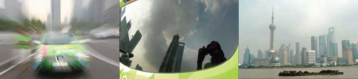
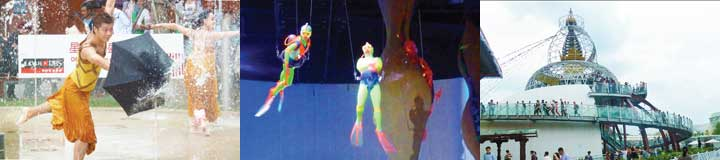
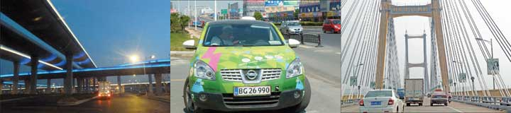

I, Green Car, feel so proud that I have to boast. Here I come clocking up 13000 kilometers. And listen now - I have never been in better shape! All the luggage has been sorted out to make me ready to be exhibited and then shipped to the USA. Nina and Hjalte have spent all day preparing press-material and finish the picture-show telling the story of my journey to China. Now they just have to get the final permission for me to enter the Danish pavilion on Friday.
I, Green Car, feel so proud that I have to boast. Here I come clocking up 13000 kilometers. And listen now - I have never been in better shape! All the luggage has been sorted out to make me ready to be exhibited and then shipped to the USA. Nina and Hjalte have spent all day preparing press-material and finish the picture-show telling the story of my journey to China. Now they just have to get the final permission for me to enter the Danish pavilion on Friday.
All the best - Green Car.
 On a little shuttle-boat packed full we got to the EXPO sections on other side of the river. Ship-yards, factories and power-plants have been converted to exhibition-halls and new extravagant structures added. In the "Urban Best Practice Area" cities from all over the world show what they do for the future. We got a tour of London's pavilion, a zero-emission house with solar panels and green plants on the roofs. Odense had a bicycle path and bikes to try, all very popular. The city of Bremen had examples of how electric cars and an intelligent grid could work together. But the car on show could not drive. Later we sat down in Madrid's house and had paellas with a view to a performance staged under a giant street-cooling tower.
On a little shuttle-boat packed full we got to the EXPO sections on other side of the river. Ship-yards, factories and power-plants have been converted to exhibition-halls and new extravagant structures added. In the "Urban Best Practice Area" cities from all over the world show what they do for the future. We got a tour of London's pavilion, a zero-emission house with solar panels and green plants on the roofs. Odense had a bicycle path and bikes to try, all very popular. The city of Bremen had examples of how electric cars and an intelligent grid could work together. But the car on show could not drive. Later we sat down in Madrid's house and had paellas with a view to a performance staged under a giant street-cooling tower.
Nina
We are preparing to exhibit Green Car at the EXPO and spend our time writing and putting together a little picture-presentation. We realize it is rather sensational exhibiting an electric car at the EXPO that has actually made it here by its own power. When Green Car had got all dust and mud washed off it sparkled more than ever. We drove down to "The Pearl of the East" the icon of Shanghai. Chinese tourists thronged the old Bund with all the European edifices along the river snapping pictures of friends and family smiling in front of the river and the tower as a fleet of coal barges flying the red flag steamed past.

We went to EXPO late because I wanted to see the site with all the lights on. We entered a giant flying saucer supposedly containing a concert hall. Hiking in a long queue up and down shopping arcades, restaurants, cinemas and fun-lands we finally emerged at the rim of the saucer and could enjoy the great view of giant structures with ever-changing lights. At the river-bank a magnificent fire-and-water display drew enormous crowds. We jogged from North Korea and Iran to the Caribbean through numerous national pavilions and saw only tourist pictures, souvenirs and endless TV-loops. Yet again we walked till we had no legs left pushed forward by our curiosity.
Nina

it was like a giant theme-park and entertaining to watch how different the styles and contents of the pavilions were. Hour-long queues made us seek out the less visited pavilions. Cambodia only had plaster copies of old stones, Uzbekistan mostly tourism posters and souvenirs. Nepal had constructed a futuristic pagoda. Under the roof in the big Australian pavilion dancing divers diverted the crowd. Portugal showed the kingdom's old ties with China and the modern nation's emphasis on wind energy and electric cars - illustrated by a Norwegian mini city car. Singapore performed a poetic ballet with umbrellas and fountains. New Zealand had planted a tropical garden on the roof. Serena was surprised and happy when she discovered they were real and not made of plastic. Sweden displayed pedagogical models of sustainable technology. Turkey showed in a great way how advanced their cities were thousands of years ago. We are still on the look-out for new ideas for the better cities of the future.
Nina

Lene from the Danish EXPO-team gave us a warm welcome and we had a damn good cup of coffee. The Little Mermaid is a scoop and the city-bikes hit the EXPO-theme Better City Better Life right on. The subtle photo-collages on the walls give a good idea about life in Denmark. We now look forward to Green Car going on stage in the Pavilion on the 15th. It is having the ultra-exclusive car permission to enter EXPO worked out. We can't tire of our stunning view from the 17th floor. Coal-barges sail down the river and electricity makes the city shine.

We have arrived in Shanghai completing the longest and most challenging part of our round the world tour! From the 17th floor where we stay we have a magnificent view of all the pulsating lights of Shanghai and EXPO. Everything is grander and brighter than anything we dared imagine. By coincidence we arrived in Shanghai at the same time as Zero Race, two motorcycles from Switzerland and Germany and an experimental car from Australia attempting to go round the world in 80 days on electricity. We had dinner with the exhausted participants and exchanged experiences. Good luck friends! We share a common goal - to promote electric vehicles by taking them on the ultimate test. On this day we send a big Hurrah to Soeren Ekelund. AfutureEV's Danish electric car that brought us here, is leading the global race of real, production electric cars. The cars of the future will be electric. Of course, Hjalte and I also have to send all of you greetings from Green Car, smiling down on the EXPO-parking lot.

It took us two hours and 50 km of frustration to hit the right road out of Nanjing. Several exits to National Road, the non-express-way, were blocked by road-works. We drove and drove and lost 25% of our power before finally finding our way out. At lunch time we took a two hour break to charge and had time to see a park with newly built temples for Chinese deities and a brand-new old-style Buddhist tower pagoda. Darkness fell and again we had problems finding our way. The enormous roads were all new and the GPS could not find the hotel in Wu Xi with a million inhabitants. Serena our guide, was almost finished before a taxi showed us the way and we could park with 3% power left. A good night's sleep and we are ready for the last bit to Shanghai!

At nine o'clock we were ready to leave Bang Bu with Green Car fully charged. I was rather sleepy so Hjalte drove the car. Serena sat on the back seat with her Chinese GPS, the electronic voice politely addressing her with Ni Hao every time its opened its mouth. The traffic got less chaotic as we entered Nanjing, capital of Jiangsu province. Sun Yat Sen the father of moderns China greeted us at the main square. We felt very well taking an evening stroll on the big-city streets lined with plane trees and brand new sky scrapers. Between the exclusive shops, throngs of young shoppers and illuminated towers we almost lost our way. In the end we found an Italian restaurant and had the first pizza since home. Green Car was charging down in the hotel yard and we waved a good-night to the car from our room at the 8th floor.

With the battery 93% charged Green Car drives around 200 km, so we did not have the need for a lunch-time charging break today. The provincial road ran between a railroad and a canal - and at times diverted by roadworks unto small muddy village roads. The traffic is dense, we meet cars, busses, trucks, motorbikes, all kinds of three-wheelers from heavy, thumping beasts of burden to tiny cars, electric bikes, pedestrians and humans pulling all kinds of loads - and all this moving in both directions all over the road. And don't forget all the vehicles cutting in from the sides saved by a hefty overdose of horn-blasting and the mavericks crossing the red light or going the wrong way through the roundabouts. After hours of hectic holiday traffic we reached the big town of Bang Bu in Anhui province. We were overtaken, undertaken and inner-taken. But so far Green Car has not got a single bruise.